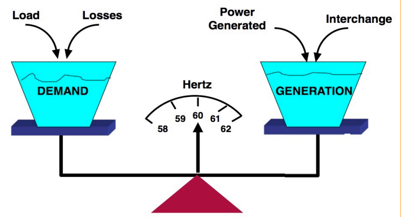

A power grid with more variations
An envisioned future for the power grid is one that relies more on renewable than non-renewable generation sources. An inevitable cost of this goal is the inherent variability present in renewable generation sources, such as solar or wind. This variability would require grid operators to have resources that can respond quickly when there are spikes in renewable generation. However, it is not within the operating constraints of conventional generators to do this. Thus a new resource is being investigated to help mitigate the supply demand mismatch. Flexible loads are a resource for the Balancing Authority (BA) of the future to aide in the balance of supply and demand in the power grid.

What are the solutions?
The traditional approach is having a large scale battery to meet the demand-supply mismatch. This is expensive, which cancels the benefits and interests of introducing more renewable energy into the power grid. I work on exploring other ways to balance the demand-supply mismatch, mostly, using Virtual Energy Storage (VES).
What is VES and corresponding challenges?
Gernerally, VES comes from flexible loads that can vary their power consumption so that the demand-supply mismatch is reduced while a similar quality of service (QoS) is maintained for customer. There are quite a lot challenges for us, e.g., what are the resources for VES, how to apply such control strategy, how to guarantee the QoS, how much can VES help the grid, and how to coordinate millions of VES providers?
Updated: Sept 13, 2019